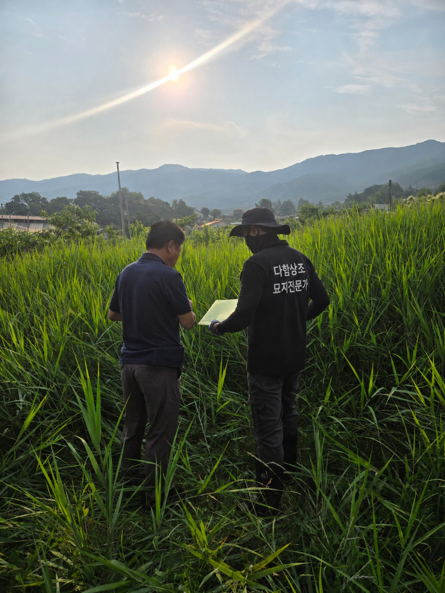
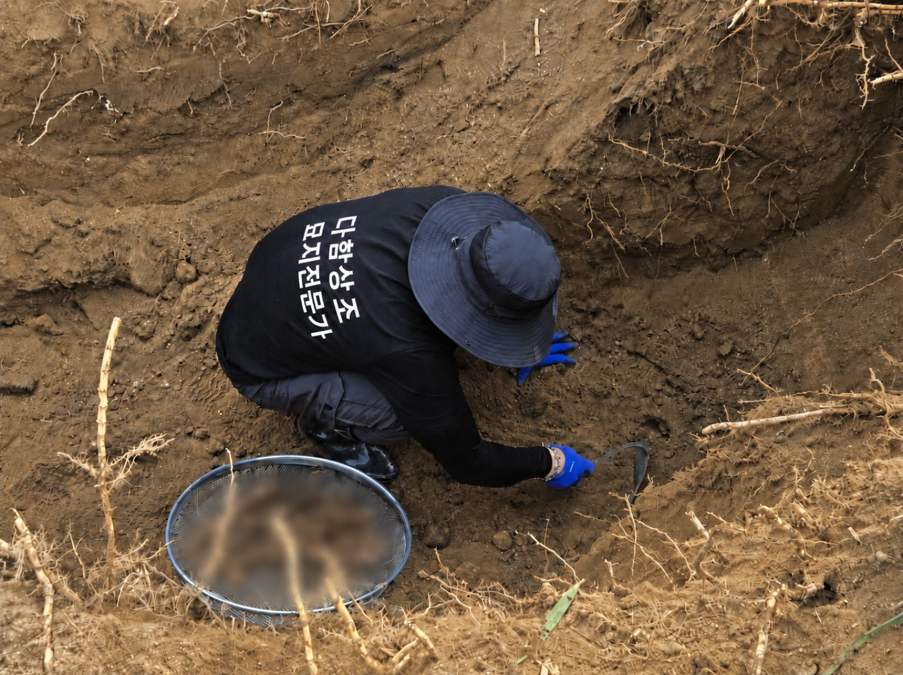
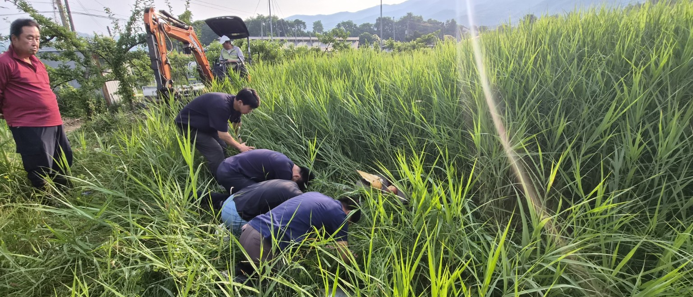
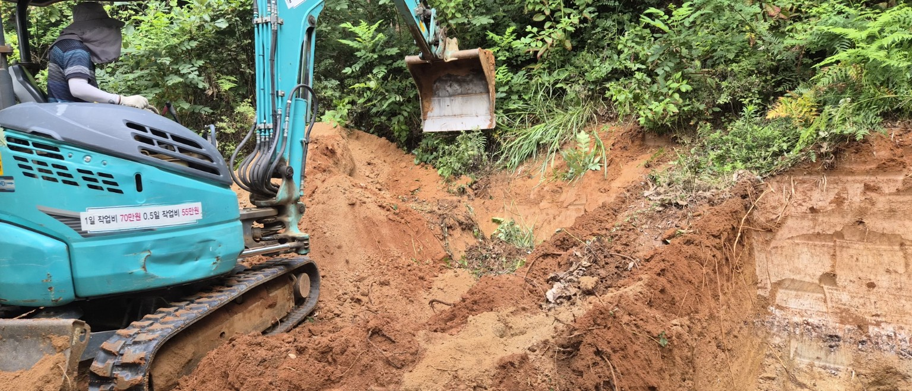
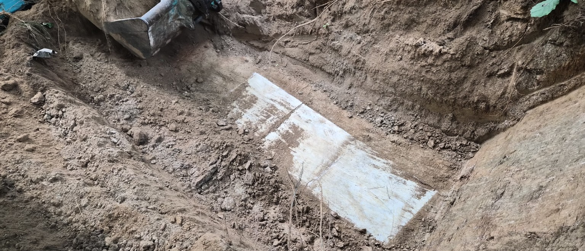

DAHAM CEMETERY SERVICE
다함장묘
현장을 아는 전문가가
직접 맡습니다.
묘지 이장 · 개장 전문
개장신고 안내부터 파묘, 유골수습, 화장예약, 장지 상담까지
처음부터 끝까지 대표가 직접, 현장에서 함께합니다.
DAHAM CONTRACT STATUS
현재 계약현황
계약중답사예약사전상담
묘지는 사람이 아닌,
현장을 아는 사람이
지킵니다.
현장을 아는 사람이
지킵니다.

경험이
결과의 차이를
만듭니다.DAHAM PROFESSIONAL
결과의 차이를
만듭니다.DAHAM PROFESSIONAL
OUR EXPERTISE
현장에서 답을 찾습니다.
다함장묘는 수많은 현장을 직접 경험한 노하우로 안전하고 정확한 절차를 지켜 진행합니다. 보이지 않는 곳까지 끝까지 책임지는 것을 원칙으로 합니다.

CASE 02 · 현장 상담현장에서 시작되는 정확한 판단
CASE 03 · 묘지 이장안전하고 체계적인 장비 작업
CASE 04 · 구조 확인상태를 확인하고 다음 단계 진행ONE STOP SERVICE
상담부터 현장까지
한 흐름으로 연결합니다.
개장신고 안내
관할기관 절차와 준비서류를 단계별로 안내합니다.
파묘 · 유골수습
현장 상태에 맞춰 인력과 장비를 구성해 진행합니다.
화장예약 · 운구
예약시간과 이동동선을 연결해 일정 차질을 줄입니다.
봉안 · 자연장 상담
가족이 원하는 방식과 조건에 맞춰 장지를 상담합니다.
PROCESS
복잡할수록 순서대로 진행합니다.
- 01상담 문의전화 · 사진 상담
- 02현장 확인위치 · 진입로 · 지형
- 03개장신고 안내필요 절차 확인
- 04파묘 · 유골수습현장상태별 작업
- 05화장예약 · 운구일정과 이동 연결
- 06봉안 · 자연장안치 및 마무리
FAQ
자주 묻는 질문
묘지 사진만 보내도 상담이 가능한가요?
묘지 전경, 주변 지형, 차량 진입로, 묘비 주변 사진과 위치를 보내주시면 1차 현장조건을 파악하는 데 도움이 됩니다.
현장에서 추가비용이 생길 수 있나요?
장비 진입, 석물, 미육탈 등 현장변수는 사전 확인이 중요합니다. 확인되는 조건은 작업 전 안내하고 범위를 정합니다.
화장예약과 운구도 함께 상담하나요?
개장 일정과 화장예약 시간을 맞추고 이동동선을 함께 확인하는 방식으로 진행합니다.